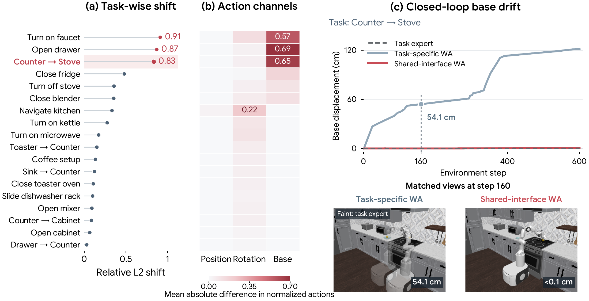
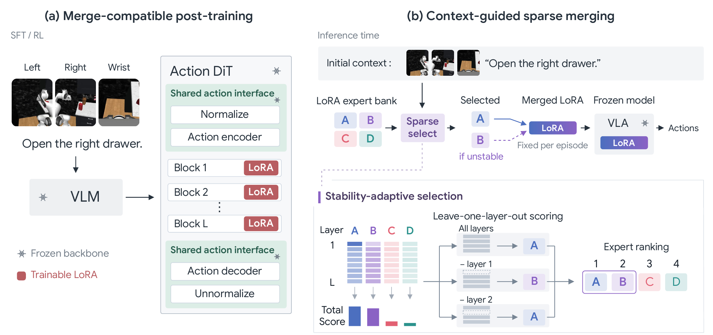

SEPARATE ACTION MAPPINGS
Off targetTask-specific interfaces
Preparing the robot workspace…
Executed action2.042
Target deviation+104.2%
Averaging breaks the match between internal parameters and interface.
1 UQMM Lab, The University of Queensland
PolicyWeave on four real-robot tasks. Selected successful rollouts, shown at original speed.
Independently post-trained VLA experts can lose performance when their parameters are merged. PolicyWeave preserves a shared action interface, including normalization, the action encoder, and the action decoder, during task-specific SFT or SFT then RL. At deployment, the initial scene and instruction guide sparse merging. The resulting parameters remain fixed throughout the episode.
Both experts produce the same action. Change their interface scales and mixing weights to see why merging their parameters can miss the target.
Preparing the robot workspace…
Averaging breaks the match between internal parameters and interface.
Shared scaling preserves the target in this example.
For input 1, the hidden weight × output scale gives the action.
Both endpoints are correct. Mixing incompatible parameters introduces error between them.
Kinematic illustration · Not a policy evaluation or recorded rollout. Target action = 1.
Drag to orbit · Arrow keys to rotateFor a fixed input of 1, a two-parameter model produces action a = d · w. The internal parameter w and output-interface scale d compensate for each other, so both experts remain correct.
Expert A: w = 1, d = 1
Expert B: w = 1/r, d = r
Let β be the weight assigned to expert B. Merge parameters, not actions:
a = (1 − β + β/r) × (1 − β + βr)Both experts: w = 1, d = 1
Keep the interface fixed and combine the hidden parameters:
a = [(1 − β) × 1 + β × 1] × 1 = 1This isolates interface mismatch, not interference between different tasks. PolicyWeave preserves normalization, the action encoder, and the action decoder. See the VLA experiment below.
In this RoboCasa365 Counter → Stove scene, base drift at step 160 is 54.1 cm with task-specific interfaces, versus <0.1 cm with a shared interface. Both policies use weight averaging.

Panels (a,b) apply task-specific and shared normalization to the same 1,800 raw actions across 18 tasks. Panel (c) compares policies from matched scenes with paired denoising noise; the images show step 160.
Learn task-specific LoRA updates with a shared action interface. Then use expert context responses and ranking stability to select one expert or merge a sparse set.

Experts are adapted using SFT or SFT then RL. A frozen VLM encodes the initial scene and instruction. Normalized cross-attention key-update responses score expert relevance, and leave-one-layer-out ranking stability determines how many updates to merge. The merged parameters stay fixed throughout the episode. No separately trained router or calibration trajectories are required.
GR00T N1.5 · 18 atomic tasks · 10 long-horizon tasks · 4 real-world tasks
PolicyWeave · SFT → SFT then RL
Task-specific RL improves the merged policy; joint RL raises co-training from 58.1% to 60.7%.
| Method | SFT | SFT then RL |
|---|---|---|
| Individual task identity supplied | 65.6% | 76.2% |
| Co-training | 58.1% | 60.7% |
| Weight averaging | 49.6% | 52.3% |
| TIES | 52.9% | 54.2% |
| ISO-CTS | 54.1% | 56.3% |
| TSV-Merge | 54.7% | 61.4% |
| SSR-Merge | 58.9% | 62.8% |
| PolicyWeave | 64.7% | 74.1% |
Merging methods use the same shared-interface expert bank within each training stage. Each task-specific SFT expert uses 50 demonstrations, or 10% of the available task data.
PolicyWeave · final task success
Compared with 80.8% for individual experts and 28.2% for the strongest evaluated static merging method.
| Method | Final success | Partial success |
|---|---|---|
| Individual task identity supplied | 80.8% | 88.9% |
| GR00T N1.5 co-training | 72.4% | 84.1% |
| Weight averaging | 14.0% | 53.9% |
| TIES | 16.0% | 55.0% |
| ISO-CTS | 16.6% | 55.6% |
| TSV-Merge | 28.2% | 61.2% |
| PolicyWeave | 75.4% | 86.4% |
Partial success measures the peak fraction of simultaneously satisfied task goals in each episode. Every expert is trained on its complete long-horizon task; the benchmark evaluates retention, not unseen skill combinations.
PolicyWeave · four-task mean success
Compared with 42.5% for GR00T N1.5 co-training and 48.8% for π0.5 co-training, over 20 rollouts per task.
| Task | π0.5 | GR00T N1.5 | PolicyWeave |
|---|---|---|---|
| Upright bottle | 30% | 10% | 40% |
| Stack blocks | 15% | 10% | 55% |
| Press button | 80% | 85% | 95% |
| Place cup | 70% | 65% | 80% |
| Mean | 48.8% | 42.5% | 67.5% |
π0.5 and GR00T N1.5 are co-trained on the four tasks. PolicyWeave merges independently post-trained GR00T N1.5 experts.